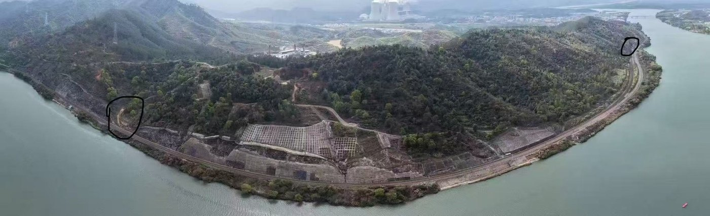
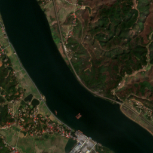
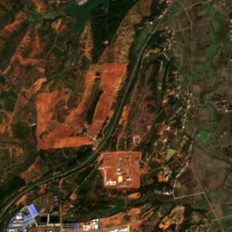
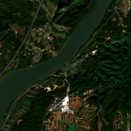

2.1 三个测点概况
三个测点都在京广线上，分别代表河流与陆地交错、施工扰动集中和植被覆盖的山地坡面三类环境。每个测点研究一块 2.56 km × 2.56 km 的范围。
三个测点
| 测点 | 环境 | 关注对象 | 观察范围 | Sentinel-2 期数 |
|---|---|---|---|---|
| 株洲南 | 湘江东北岸，铁路紧贴山脚 | 长大边坡和铁路上方的山体 | 河右侧全部山体及右岸线，含铁路至河的窄带 | 181 期 |
| 衡阳北 | 铁路上方有大片红土施工区 | 施工范围扩大和雨后泥沙下泄 | 整幅影像 | 207 期 |
| 韶关南 | 北江东南岸，铁路一侧贴山、一侧临河 | 山坡裸露、滑塌和河岸变化 | 河右侧全部山体及右岸线，含铁路至河的窄带 | 117 期 |
期数为2021年7月—2026年7月，原513景同日去重8景后保留505期；全期云遮挡的日期仍保留，整期质量记不可判读、导出为255，不能因此当作无变化。
现场与卫星影像






为什么观察河右侧山体与右岸线
铁路方关注铁路上方山体和高陡边坡，这些地方视频、巡检和无人机难以充分覆盖。后续观察范围已扩为v2：株洲南和韶关南包括河右侧全部山体及右岸线，保留铁路至河之间的窄带；衡阳北仍看整幅影像。页面、预标和导出按同一范围处理；新增未复看的区域保持255。旧v1边界与面积仅是历史口径。